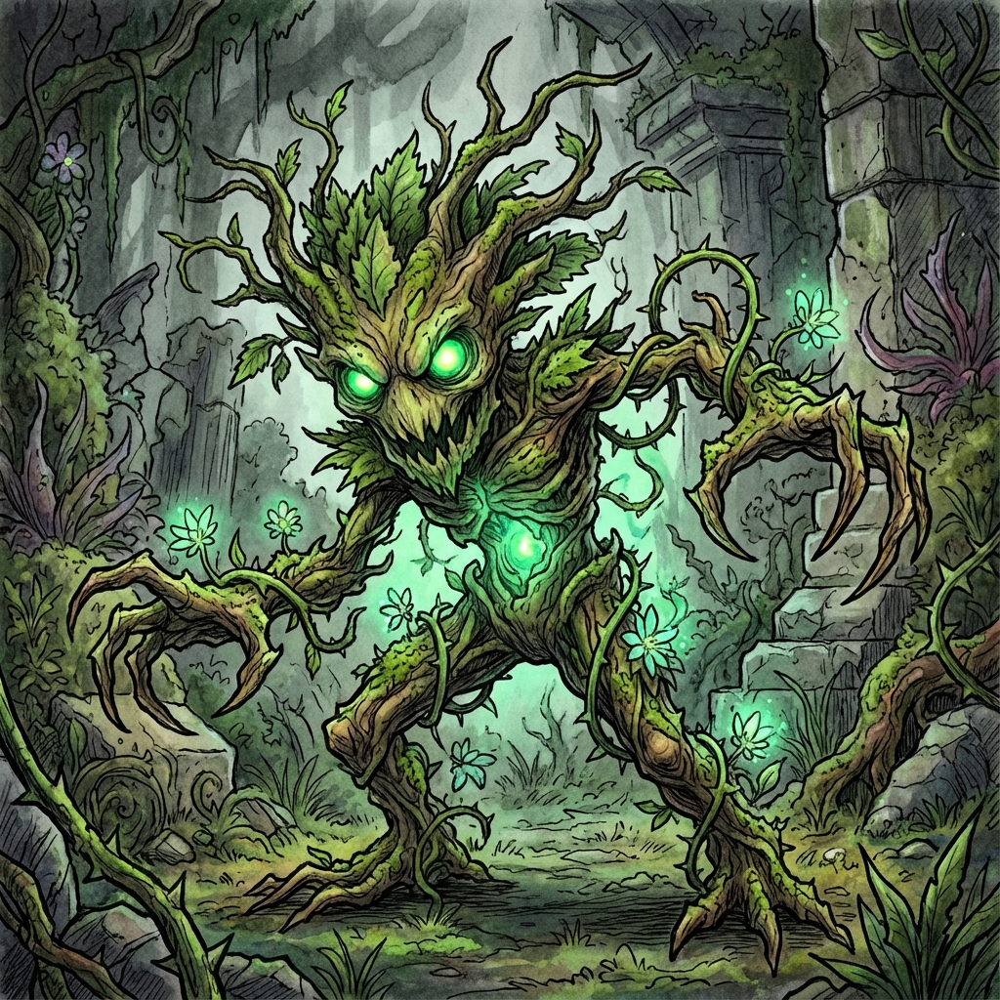

Verdant Mephit
Nature Essence Elemental
Type: Small Elemental (Neutral)
CR: 1/2 (100 XP)
Description
A small, fey-like imp woven from vines, leaves, and moss. Flowers bloom around its feet, but when angered, thorny vines lash out viciously. It appears mischievous yet protective of natural spaces. These mephits are manifestations of disturbed Nature Essence found in ancient elven structures, particularly in gardens and sanctuaries where natural magic has been corrupted or disrupted.
Stat Block
Armor Class: 12
Hit Points: 21 (6d6)
Speed: 30 ft., fly 30 ft.
STR8 (-1)
DEX15 (+2)
CON10 (+0)
INT7 (-2)
WIS12 (+1)
CHA10 (+0)
**Skills:** Perception +3, Stealth +4
**Damage Immunities:** Poison
**Condition Immunities:** Poisoned
**Senses:** Darkvision 60 ft., passive Perception 13
**Languages:** Sylvan, Terran (understands but can't speak)
**Damage Immunities:** Poison
**Condition Immunities:** Poisoned
**Senses:** Darkvision 60 ft., passive Perception 13
**Languages:** Sylvan, Terran (understands but can't speak)
Abilities & Actions
**Verdant Body:** The mephit's form is composed of living plant matter; faint pollen drifts in its wake.
**Thorn Strike (Ranged Attack):**
*Ranged Weapon Attack:* +4 to hit, range 30/60 ft., one target
*Hit:* 5 (1d6 + 2) piercing damage
**Roots of Wrath (Action):**
The mephit slams a clawed vine into the ground, forcing each creature in a 10-foot radius to make a Strength or Dexterity saving throw (DC 13). On a failure, a creature becomes Restrained by thick, writhing vines. A Restrained creature can use its action to repeat the save, freeing itself on a success. The vines remain for up to 1d4 rounds or until the mephit is destroyed. This area also becomes difficult terrain for all creatures except the Verdant Mephit.
**Bloomstrike (Ranged Vine Lash):**
*Ranged Weapon Attack:* +4 to hit, range 30 ft., one target
*Hit:* 6 (1d6 + 2) slashing damage plus 3 (1d4) poison damage
*Special:* If the target is Large or smaller, the mephit may pull the target 10 feet closer or push it 10 feet away (like a *thorn whip* effect).
**Growth Spurt (Bonus Action; Recharge 5-6):**
The mephit channels a surge of Nature Essence, regaining 1d6+2 hit points. The area around it briefly flourishes with blossoms; allied plant creatures within 10 feet either regain 1d4 hit points or have advantage on their next attack.
**Thorn Strike (Ranged Attack):**
*Ranged Weapon Attack:* +4 to hit, range 30/60 ft., one target
*Hit:* 5 (1d6 + 2) piercing damage
**Roots of Wrath (Action):**
The mephit slams a clawed vine into the ground, forcing each creature in a 10-foot radius to make a Strength or Dexterity saving throw (DC 13). On a failure, a creature becomes Restrained by thick, writhing vines. A Restrained creature can use its action to repeat the save, freeing itself on a success. The vines remain for up to 1d4 rounds or until the mephit is destroyed. This area also becomes difficult terrain for all creatures except the Verdant Mephit.
**Bloomstrike (Ranged Vine Lash):**
*Ranged Weapon Attack:* +4 to hit, range 30 ft., one target
*Hit:* 6 (1d6 + 2) slashing damage plus 3 (1d4) poison damage
*Special:* If the target is Large or smaller, the mephit may pull the target 10 feet closer or push it 10 feet away (like a *thorn whip* effect).
**Growth Spurt (Bonus Action; Recharge 5-6):**
The mephit channels a surge of Nature Essence, regaining 1d6+2 hit points. The area around it briefly flourishes with blossoms; allied plant creatures within 10 feet either regain 1d4 hit points or have advantage on their next attack.
Combat Tactics
**Playful Guardian:** Attacks only if it senses "unnatural" intrusion.
**Tactical Approach:** Prefers to entangle foes with Roots of Wrath, then whip them from short range with Bloomstrike or yank them into hazards. Uses Growth Spurt to sustain itself in extended combat.
**Environment:** Found in corrupted gardens, nature sanctuaries, or areas where Nature Essence has been disturbed.
**Tactical Approach:** Prefers to entangle foes with Roots of Wrath, then whip them from short range with Bloomstrike or yank them into hazards. Uses Growth Spurt to sustain itself in extended combat.
**Environment:** Found in corrupted gardens, nature sanctuaries, or areas where Nature Essence has been disturbed.